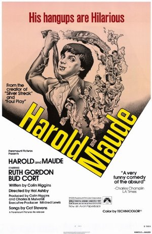

Season 45 (2010-2011)
-
September 12, 2010Directed by Jeremy Leven; Starring Marlon Brando, Johnny Depp, Faye Dunaway
Don Juan DeMarco
USA, 1994, 97 min, Color, PG-13
In a wonderful late-career performance, Marlon Brando plays Dr. Jack Mickler, a clinical psychiatrist on the brink of retirement from a New York mental hospital. He is assigned to care for a dashing but suicidal young man, John R. DeMarco (Johnny Depp), who wears a mask and cape and claims to be the great lover, Don Juan. The avowed seducer of more than a thousand women has been brought low at the hands of his one true, but unobtainable, love. With just ten days to cure "Don Juan" of his delusion, Mickler has him relate his fantastical life story. As their sessions unfold, the passionate youth exerts a powerful effect on the hospital staff and on Mickler's own relationship with his wife, Marilyn (Faye Dunaway). The world-weary doctor starts to believe that his patient might really be Don Juan after all.
Film Notes (Britt Crews): "There are only four questions of value in life, Don Octavio. What is sacred? Of what is the spirit made? What is worth living for, and what is worth dying for? The answer to each is the same: only love." ~Don Juan DeMarco
Once upon a time, Johnny Depp, an actor known for playing offbeat roles, dating starlets and supermodels, destroying a hotel room and his 21 Jump Street teen idol status, read a script by first-time director Jeremy Leven. Leven, a clinical psychologist who also founded, wrote, and directed The Proposition, a satirical political revue that ran off-Broadway for ten years and launched Jane Curtin's career, had refused as much as $2 million for the script. He was still in recovery from a previous cinematic misadventure with the Weinstein brothers who not only co-directed, but so heavily rewrote his screenplay Playing for Keeps that Bob and Harvey Weinstein are credited as the first and second writers on the film with Leven limping in at third. The movie flopped resoundingly, making Leven even more determined to direct his latest script himself.
Leven envisioned Johnny Depp as Don Juan DeMarco. Depp purportedly loved the character, but threatened to walk away from the project if he was not granted one wish: Marlon Brando. If Leven could sign the actor that Depp most admired – the elusive and reclusive Brando – to the role of psychiatrist Dr. Jack Mickler, Johnny Depp would play the title role. Much to the surprise and amazement of all, Leven did. Along the way, he also enticed Faye Dunaway to play Mickler's wife of 32 years. They had a movie…
And what a movie! A beautiful young man believes he is the greatest lover of all time. Dressed in a cape and mask and sporting a suspicious Spanish accent, he could be considered a joke or a caricature, perhaps even crazy. Yet women indeed do find him irresistible. All except one. The one. His one true love. Despondent, he contemplates ending his life.
Enter Dr. Jack Mickler, ten days away from retirement, who takes on this final challenge. Worn out, empty, beaten down, and feeling unutterably old, depleted and tired, Mickler discovers something magical in Don Juan DeMarco. Who is curing whom? Like Mickler, the willing viewer of Don Juan DeMarco can be enticed into throwing off cynicism, suspending disbelief in romantic love and the soul's ability to transcend itself for another, and – for at least 97 minutes – be transported to a secret, inner, romantic room lit by candles and scented with flowers where one still believes in love and life and redemption.
Surrender. Allow yourself to be seduced by this true romantics' romantic comedy. You could live happily ever after.
"When I say that all my women are dazzling beauties, they object. The nose of this one is too large; the hips of another, they are too wide; perhaps the breasts of a third, they are too small. But I see these women for how they truly are… glorious, radiant, spectacular, and perfect, because I am not limited by my eyesight. Women react to me the way that they do, Don Octavio, because they sense that I search out the beauty that dwells within until it overwhelms everything else." ~Don Juan DeMarco -
 October 10, 2010Directed by Alberto Lattuada; Starring Alberto Sordi, Norma Bengell, Gabriella Conti, Ugo Attanasio
October 10, 2010Directed by Alberto Lattuada; Starring Alberto Sordi, Norma Bengell, Gabriella Conti, Ugo Attanasio
Mafioso
Italy, 1962, 105 min, B&W, Not Rated, Italian w/subtitles
A dark comedy with strong neo-realist influences, Mafioso was one of the first Italian features to address the subject of Cosa Nostra. Alberto Sordi stars as Antonio, a Sicilian working in a gleaming, modern Fiat factory in Milan. As the movie opens, Antonio prepares to take his lovely blonde wife, Marta (Norma Bengell), and their daughters to see his hometown of Calamo, Sicily. Before leaving, he agrees to deliver a gift from his boss to Don Vincenzo (Ugo Attanasio) in Calamo. On the ferry, Antonio beams with pride as the isle of his birth comes into view. His delight grows as he introduces his bride and children to his eccentric relations. Antonio's holiday comes to a sudden end, however, when Don Vincenzo asks him for a favor. Leaving his family (ostensibly on a hunting trip), Antonio embarks on an unexpected journey. Viewed through the lens of later American movies such as The Godfather trilogy, Mafioso offers a counterpoint to our voyeuristic fascination with the Mob. This forgotten gem was re-released to raves in 2007.
Film Notes (David Lagos): Director Alberto Lattuado's Mafioso ranks with the finest Italian cinema of the 1960s, on par artistically with Fellini's La Dolce Vita and Antonioni's L'Avventura. Though set in Sicily and addressing the topic of Cosa Nostra, Mafioso is not a "mob movie" – or not primarily so. It is at once a story about the return of the local boy made good, a comedic fish out of water tale, and a tragic meditation on a society governed by a pre-modern code of honor. (Viewers interested in the film's sociological aspect will find a closer-to-home parallel to many of the dynamics explored by Lattuado in Richard E. Nesbit and Dov Cohen's seminal study Culture of Honor: The Psychology of Violence in the South (Westview Press, 1996)). Mafioso is also a director's lovingly satirical portrait of his country's regional character, indulging every conceivable cliché about the industrious, chic, but bloodless Northern Italians and their voluble, coarse, and lazy countrymen in the South. Though tagged as black comedy, Lattuado's masterpiece constantly modulates its tone – from broad comedy of manners, to pastoral idyll, to family melodrama, to ruminative character study, to neo-realist travelogue, to bleak existential tragedy – without sacrificing any of its narrative power.
What makes Mafioso's protean mood so exhilarating, rather than disorienting, is the virtuoso performance of its star, the iconic Italian actor Alberto Sordi (1920-2003). Sordi plays Antonio Badalamenti, a successful if somewhat simple-minded executive in Milan who is planning to return home to Calamo, Sicily, for a two-week family vacation. When we meet Antonio, he is the very picture of modern technical efficiency, striding the factory floor in a white lab coat, clipboard in hand. When an intimidated employee hastens his pace of his work, the precise Antonio consults a stopwatch and chides the man for performing the task too quickly. Before leaving, Antonio stops to visit his boss, who asks him to deliver a gift to Don Vincenzo in Calamo. We learn that this will be Antonio's first trip back to Sicily since coming to work on the mainland. It will also be the first opportunity for his extended family to meet his blond Milanese wife, Marta (Brazilian actress Norma Bengell), and two young daughters. By the time the ferry deposits him and his new family on the isle of his birth, Antonio has shed his polished corporate veneer and is positively beaming with excitement. Sordi finds great pathos in his character's swings from the pure joy of homecoming to the fretful anxiety over the yawning gulf between his chic urban wife and his provincial and less-than-welcoming family – particularly his mother, whose sullen tightlipped glares speak volumes. The détente orchestrated by Marta is both a humorous high point of the movie and an inspiration to all who struggle to win over their in-laws.
Although Antonio receives a hero's welcome in Calamo, his story takes a darker turn when he takes his new family to pay his respects and deliver his boss's gift to Don Vincenzo (Ugo Attanasio). Nino's sense of identity and familial loyalty are put to the test in a way that elevates Mafioso to an almost surreal level of dramatic potency. As you watch the film's final third, bear in mind that it prefigures Francis Ford Coppola's more famous Godfather trilogy by more than a decade. By presenting a mirror image of Vito Corleone's return to Sicily in The Godfather II, Lattuado's Mafioso manages to retroactively heighten and enrich our experience of Coppola's work. (For fans of The Sopranos, it also provides a similar counterpoint to Tony Soprano's trip to Naples in Season 2).
Because the food of Sicily plays such an important role in Mafioso, it is fitting to conclude these notes with a recipe inspired by "The Island of the Sun":
Sicilian Almond & Dried Tomato Pesto
Makes about 1 pint
* 1-1/2 cups oven- or sun-dried tomatoes (see Note)
* 1-1/3 cups whole raw almonds (about 7 ounces)
* 1/4 cup (packed) fresh mint leaves (about half a regular-size bunch)
* 1/4 to 1/2 teaspoon chile flakes, to taste
* 2 large garlic cloves
* 2 tablespoons extra virgin olive oil
* 1-1/3 cups hot water
* Kosher salt, to taste
Instructions: Roughly chop dried tomatoes (not in oil), and rehydrate with hot water. If using oil-packed dried tomatoes, drain them well, discard oil and chop. Combine tomatoes, almonds, mint, chile flakes, garlic, oil, and hot water in the bowl of the food processor. Pulse until it forms a coarse paste. Add salt to taste. If not planning on using the pesto immediately, place in a tall, narrow glass jar, cover with a thin layer of olive oil, and store in the refrigerator.
Note: Dry the tomatoes by halving them, spreading them cut side-up on a foil-lined baking sheet, and drying them in a 200° oven several hours or overnight.
Buon Appetito! -
 November 14, 2010Directed by Eugene Jarecki; Starring Ken Adelman, John Ashcroft, Osama bin Laden, George Bush
November 14, 2010Directed by Eugene Jarecki; Starring Ken Adelman, John Ashcroft, Osama bin Laden, George Bush
Why We Fight
France/UK/Canada, 2005, 98 min, Color/B&W, PG-13
Winner of the Grand Jury Prize at the 2005 Sundance Film Festival, Eugene Jarecki's documentary is an unflinching look at the anatomy of the American war machine. Weaving personal vignettes with commentary by John McCain, William Kristol, Chalmers Johnson, Gore Vidal, Richard Perle and others, Why We Fight mounts a bipartisan inquiry into the workings of the apparatus decried by President Dwight D. Eisenhower as the "military industrial complex." This film digs beneath the headlines about American military operations to explore the political, economic, and ideological forces that drive us to wage perpetual war against an ever-changing enemy. Inspired by Frank Capra's film series that explored the reasons for entering World War II, Jarecki's Why We Fight raises questions that have particular resonance today: Why are we doing what we're doing? What is it doing to others? And what is it doing to us?
Film Notes (Ian Krabacher): Why We Fight is an unflinching look at the anatomy of the American war machine, weaving unforgettable personal stories with commentary by a "who's who" of military and beltway insiders. Directed by Eugene Jarecki, it won the Grand Jury Prize at the 2005 Sundance Film Festival. Featuring interviews with John McCain, William Kristol, Chalmers Johnson, Gore Vidal, Richard Perle, and many others, Why We Fight launches a bipartisan inquiry into the workings of the military industrial complex and the rise of the American Empire.
Inspired by President Dwight D. Eisenhower's legendary farewell speech (in which he coined the phrase "military industrial complex"), filmmaker Jarecki surveys the scorched landscape of a half-century's military adventures, asking how – and telling why – a nation of, by, and for the people has become the savings-and-loan of a system whose survival depends on a state of constant war.
The film moves beyond the headlines of various American military operations to the deeper questions of why – why does America fight? What are the forces – political, economic, ideological – that drive us to fight against an ever-changing enemy?
"Frank Capra made a series of films during World War II called Why We Fight that explored America's reasons for entering the war," Jarecki notes. "Today, with our troops engaged in Iraq and elsewhere for reasons far less clear, I think it's crucial to ask the questions: 'Why are we doing what we are doing? What is it doing to others? And what is it doing to us?'"
Prior film projects for Jarecki include The Trials of Henry Kissinger, which was released theatrically to critical acclaim in 130 US cities. Winner of the 2002 Amnesty International Award, the film was nominated for an Independent Spirit Award and has been broadcast in over thirty countries. In 2002, The Trials of Henry Kissinger was selected to launch the Sundance Channel's DOCday venture as well as BBC's prestigious digital channel BBC4.
Recently, Jarecki has just completed co-directing a new documentary entitled Freakonomics, based on the book by University of Chicago economist Steven Levitt and New York Times journalist Stephen J. Dubner. Jarecki directed the "It's Not Always a Wonderful Life" segment.
In addition to his work in film, Jarecki is also the founder and Executive Director of The Eisenhower Project, an academic public policy group dedicated, in the spirit of Dwight D. Eisenhower, to studying the forces that shape American foreign policy.
Why We Fight was first screened at the 2005 Sundance Film Festival on January 17, 2005, exactly forty-four years after Eisenhower's farewell address. Despite the film's critical acclaim and success at Sundance, it received only a limited public cinema release on January 20, 2005, and was then released on DVD on June 27, 2005, by Sony Pictures Home Entertainment.
Cinema Inc is pleased to bring Why We Fight back to the big screen November 14th, 2010.
Question & Answers with Filmmaker Eugene Jarecki:
Q: What is the film Why We Fight about?
A: The perils of empire. I think the film is ultimately about where America is today, how we got here, and where we are going. For many people, the war in Iraq and the Bush Doctrine of preemptive war seem like a frightening new chapter in the history of US foreign policy. But what I learned in making the film is that where we are today is as much an extension of the past as a departure from it. Since World War II, America has been on a path toward empire. Eisenhower and Washington before him warned us that to build and protect an empire requires standing armies – a permanent military establishment – and that these come to threaten democracy itself. Eisenhower warned of "destroying from within that which you are trying to protect from without."
Q: What compelled you to make the film?
A: Dwight Eisenhower's farewell address. In his 1961 Farewell Address as President, Dwight Eisenhower surprised everyone when he warned America that a "military-industrial complex" was acquiring national influence that could threaten democracy on a global scale. At a time of exploding defense profits and when an unprecedented number of people inside the government hail from former posts at defense contractors, I wanted to investigate whether Eisenhower's fears have come to pass.
Q: Why We Fight was actually the title of a series of films made by Frank Capra during World War II. Why did you borrow the title?
A: To connect past and present. After Pearl Harbor, Frank Capra was asked to make a series of films examining America's reasons for entering World War II. Back then, the reasons were clear – fascism, genocide, oppression. Today, if you ask people why we are fighting in Iraq, I think the reasons are far less clear. So much has changed about how Americans see themselves and our role in the world. If Frank Capra asked his question today, I wondered, what would they look like? PS – We didn't just borrow Capra's title. In some cases we also borrowed beautiful images from his films to portray America from that time.
Q: There are a number of people whose stories are told in the film. Who are they and what interested you about them?
A: They are part of America's military family. People are the victims of war, but they are also its perpetrators. At every level, from the White House to the defense factory to the front line, it is people that make wars happen. So looking at why America fights would be incomplete without portraying the stories of people whose lives are interwoven in the American war machine – from its dreamers to its disillusioned. There are a handful of characters in the film and, without giving the surprises in their stories, I can say that each of them had a unique twist that drew me to them – something I didn't expect that made me rethink my preconceptions.
Q: What do you most want people to take away from the film?
A: A sense of urgency. Americans today are at a crossroads. With the public deeply divided over the Iraq war and a number of domestic issues, people across the political spectrum are examining more closely than ever America's identity at home and abroad. These people – what Eisenhower called an "alert and knowledgeable citizenry" – have more in common than they think. Real change is not made or broken by who wins a given election or scores short-term points. Rather, it comes when people look closely at how they are governed and what their society represents.
Q: What was the greatest challenge in making the film?
A: After making my last film The Trials of Henry Kissinger, I traveled to theaters across the country to talk to audiences and answer questions. I was surprised how much people wanted to talk about Henry Kissinger the man rather than the system he represents.
This time, I wanted to make a film that would not offer a simple villain, but instead invite viewers to look more broadly at the system itself. Why America is systemically geared to fight wars is a far deeper issue than the particular actions of any one person.
But it is a real challenge – as I discovered – to make a film without a villain. People like to have someone they can love to hate. But the problem is that too often the villain you choose is really a proxy for a system that itself needs repair. Stopping at the villain – whether it's Henry Kissinger, George Bush or anyone – is stopping short. It may feel satisfying. But it is politically impotent.
Q: The film covers a number of highly sensitive subjects. How did you get access?
A: Early on in the process, we were given approval by the Department of Defense to interview people up and down the chain of command. Once we got access, we discovered – no surprise – that people want to tell their story. At times, I found the people we spoke to in the military wonderfully candid. Sometimes people who see the film ask me, "Did you tell people what the movie was about?" I say I always did when asked, but often, the military personnel didn't ask too many questions. I think many in the military feel they are fighting for freedom – including the freedom of a documentary-maker to explore a sensitive subject of his choice. So in a way, if they would have to ask me what I am doing, then what are they fighting for?
Q: The film's title asks a question. Do you answer it?
A: Yes and no. My first goal was to ask the question. When you ask Americans why we fight they give reasons that are understandable to them – freedom, democracy, national security. But inside the Pentagon, you discover forces driving the war machine that are so much more textured. This gap between perception and reality is at the heart of Why We Fight. Of course, there can't be one right answer to a complex question, but my hope was at least to close the gap a bit.
Q: Why do you think we are fighting in Iraq?
A: Many reasons. There have been so many reasons given for why we are in Iraq – from WMDs to oil, from a democratic crusade to the desire by influential geostrategists to reassert American global power in the wake of 9/11. None of these answers alone is comprehensive. Rather, I think they're all partially true. The war seems to have been of shared service to a range of interests – a coming together of imperial thinkers, global petroleum concerns, and a culture of militarism that tilts toward/requires war to self-perpetuate. After 9/11, all of these came together to create the almost unexplainable momentum that pushed the country to war. -
December 12, 2010Directed by Jacques Demy; Starring Catherine Deneuve, Nino Castelnuovo, Anne Vernon, Marc Michel
The Umbrellas of Cherbourg (Les parapluies de Cherbourg)
France/West Germany, 1964, 91 min, Color, Not Rated, French w/subtitles
Jacques Demy's masterpiece of music and romance, which won the Grand Prize at the 1964 Cannes Film Festival, propelled 20-year-old Catherine Deneuve to international stardom. A pop-art opera, or, to borrow the director's own description, a film in song, this simple romantic tragedy begins with Guy Foucher (Nino Castelnuovo), a 20-year-old French auto mechanic, falling in love with 17-year-old Geneviève Emery (Deneuve), who works in her widowed mother's chic but financially embattled umbrella shop. On the evening before Guy is to leave for a two-year tour of combat in Algeria, he and Geneviève make love. She becomes pregnant and must choose between waiting for Guy's return or accepting an offer of marriage from a wealthy diamond merchant (Marc Michel). Considered one of the most beautiful color films ever made, Umbrellas of Cherbourg was restored to its former glory and re-released in 1992 under the supervision of Demy's widow, Agnès Varda.
Film Notes (Jackson Cooper): The first notes heard in The Umbrellas of Cherbourg are those of a solo flute playing the notes of the central melody "I Will Wait for You." A French horn then echoes this melody, adding harmony. More instruments come into play in a quasi-canon of the melody. The orchestra plays in unison as the main titles appear in front of a line of brightly colored umbrellas. The music is haunting, romantic, and has a hypnotic sound to it. We hear it and immediately we are in love.
And so begins the film: a beautifully acted and executed film where all of the dialogue is sung and the actors move with such fluidity, they seem to dance rather than move. A film where the most ordinary of images seems about as beautiful as rose petals.
This is the work of Jacques Demy, whose intention of making this movie was to bring to the silver screen something different and unique. Sure enough, he succeeded.
The film's plot is rather simple: Gas station attendant Guy (Nino Castelnuovo) and umbrella shop clerk Geneviève (Catherine Deneuve) are truly, madly, deeply in love. They fantasize about married life, do not seem to care for arguments with one another, and they both feel as though they are complete when the other is with them. When Guy is drafted, Geneviève must come to terms with the fact that she may never see Guy again. Her mother wants her to forget about Guy and marry a man solely for the purpose of financial security. Geneviève finds that hard to do, seeing as she is carrying Guy's child.
Umbrellas' plot may seem to be one you would find in a bargain-rack novelette, though Demy creates a unique and magical cinematic experience through his use of color, music, and images. An umbrella shop filled with purple wallpaper, a gas station covered with snow, all of these images are exhilarating to watch on the screen, big or small. Yet when it was first released, Demy was nervous about the quality of the colors on the film's negatives. Demy shot Umbrellas on Eastman negative stock which ultimately faded rapidly and was nearly unusable. After being circulated so much around theaters in the 1960s, the colors on the negatives began to fade, meaning audiences could not see the rich colors Demy intended.
In response, he made black-and-white copies of the original in a process similar to that of the Technicolor process called "three color bands." Fortunately for Demy, these prints had a greater longevity and in the 1990s, Demy's wife helped fund a project to create a color print from the black-and-white copies.
The result? The film as we know it today.
The film has a long history also with its composer and leading lady. Because of this film, Michael Legrand enjoyed enormous acclaim and success in Hollywood and quickly established himself as a composer of great passion, emotion, and originality. The score was nominated for two Academy Awards, Best Original Score and Best Scoring-Adaptation or Treatment.
Umbrellas' most famous song "I Will Wait for You" was nominated for Best Original Song and has been recorded by everyone from Frank Sinatra to the London Philharmonic. Tony Bennett recorded the song "Watch What Happens," using the theme from "Cassard's Story" in the film with new English lyrics.
The film also launched the career of its leading lady, Catherine Deneuve. Audiences saw her raw emotional power in Geneviève and immediately knew that many great things would come of her. Over one year after Umbrellas was released, an up-and-coming director by the name of Roman Polanski would direct Deneuve in a disturbing and claustrophobic movie called Repulsion, which would establish Deneuve as an actress who could play and own any role given to her.
Umbrellas has a way of dazzling the senses of its audience. The colors on the screen combined with Michael Legrand's continuous musical score make for a truly magical cinematic experience. Critics and viewers throughout the ages have all but criticized this film; it is a rare gem of a movie that, from the get-go, captures our interest and emotions and keeps them close, never letting go.
Even if you are not a fan of subtitled movies, operas, or musicals, Umbrellas will surely change your mind, if only for just for a second. We live in the movie, we feel all of the characters' emotions in each frame which makes the ending of the film even more riveting than the last screening. -
 January 9, 2011Directed by Andrei Tarkovsky, Eduard Abalov; Starring Nikolay Burlyaev, Valentin Zubkov, Evgeniy Zharikov, Stepan Krylov
January 9, 2011Directed by Andrei Tarkovsky, Eduard Abalov; Starring Nikolay Burlyaev, Valentin Zubkov, Evgeniy Zharikov, Stepan Krylov
Ivan's Childhood (Ivanovo detstvo)
Soviet Union, 1962, 84 min, B&W, Not Rated, Russian w/subtitles
Russian director Andrei Tarkovsky created a style of filmmaking he called "sculpting in time," characterized by Christian and metaphysical themes, extremely long takes, and indelible images of extraordinary beauty. Hints of his poetic sensibility and deliberate pacing are already on display in his debut feature, Ivan's Childhood. In this World War II drama, 12-year-old Ivan (Nikolai Burlyayev) is orphaned after his village is overrun by the invading Nazi army. He escapes from a prison camp and is adopted by Captain Kholin (Valentin Zubkov). Although Kholin intends to send the boy to school, Ivan is determined to help the Russian army. He begins to spy on the Germans, passing freely back and forth behind enemy lines – for awhile. This remarkable film won the Golden Lion Award at the 1962 Venice Film Festival and the Grand Prize at the 1962 San Francisco Film Festival.
Film Notes (Pete Corson): A controversy emerged in Russia in the early 1990s when it was alleged that Tarkovsky did not die of natural causes, but was assassinated by the KGB. Evidence for this hypothesis includes several testimonies by former KGB agents, who claim that Viktor Chebrikov gave the order to eradicate Tarkovsky to prevent what the Soviet government and the KGB saw as anti-Soviet propaganda by Tarkovsky. However, Tarkovsky, his wife Larisa Tarkovskaya and actor Anatoli Solonitsyn all died from the very same type of lung cancer. Vladimir Sharun, his sound designer in Stalker, is convinced that they were all poisoned when shooting the film near a chemical plant. Tarkovsky's films include Ivan's Childhood, Andrei Rublev, Solaris, The Mirror, and Stalker. He directed the first five of his seven feature films in the Soviet Union; his last two films were produced in Italy and Sweden, respectively. They are characterized by spirituality and metaphysical themes, long takes, lack of conventional dramatic structure and plot, and distinctively authored use of cinematography.
Film directors who Tarkovsky said influenced him were Buñuel, Mizoguchi, Bergman, Bresson, Kurosawa, and Antiononi. Ingmar Bergman said of him: "Tarkovsky for me is the greatest director, the one who invented a new language, true to the nature of film, as it captures life as a reflection, life as a dream".
It is difficult to find his films on celluloid today and we feel fortunate to have located a print of tonight's film. Ivan's Childhood is Tarkovsky's first film. In this World War II drama, 12-year-old Ivan (Nikolai Burlyayev) is orphaned after his village is overrun by the Nazi army. He escapes a prison camp and is adopted by Captain Kholin (Valentin Zubkov), who intends to send the boy away to school. Determined to help the Russian army, Ivan begins to spy on the Germans and is able to pass freely back and forth behind enemy lines – for awhile. This remarkable film won the Golden Lion Award at the 1962 Venice Film Festival and the Grand Prize at the 1962 San Francisco Film Festival. Thus began the film directing career of perhaps Russia's greatest director of the sound era in cinematic history. -
 February 13, 2011Directed by Alfred Hitchcock; Starring Cary Grant, Grace Kelly, Jessie Royce Landis, John Williams, Brigette Auber
February 13, 2011Directed by Alfred Hitchcock; Starring Cary Grant, Grace Kelly, Jessie Royce Landis, John Williams, Brigette Auber
To Catch a Thief
USA, 1955, 106 min, Color, PG
John Robie (Cary Grant) is a reformed jewel thief who is falsely accused of a string of daring cat burglaries among the rich tourists in the South of France. In order to clear his name, Robie decides that only someone with his particular set of skills can catch the real thief. In the course of his quest, he meets Frances Stevens (Grace Kelly), a spoiled and jaded member of the nouveau riche family, and her mother (Jessie Royce Landis), a comically down-to-earth society matron. There is romance, plenty of double entendres, dazzling scenery, scenes of seduction, an over-the-top fancy dress ball and eventually a captured thief. While this film is not regarded as one of Hitchcock's masterpieces, it is an eminently enjoyable romp and equally memorable to his critically acclaimed work.
Film Notes (Karen Bender): "It takes a thief to catch a thief."
According to the Cambridge Dictionary, this saying means that only a dishonest person can anticipate the thoughts and actions of another dishonest person. This is the premise of this month's feature, Alfred Hitchcock's classic whodunit To Catch a Thief. As an example of Hitchcock's "wrong man" themed films, To Catch a Thief is a crisply paced romantic romp through the French Riviera. Filmed in glorious Technicolor, this film garnered the Oscar for Best Color Cinematography in 1956. Its effervescent story line features romance, a bit of suspense, and a great deal of charm and humor through star turns by Cary Grant and Grace Kelly.
The story line goes as follows: John Robie (Cary Grant) is a reformed jewel thief who is falsely accused of a string of daring cat burglaries amongst the rich tourists in the South of France. To clear his name, Robie decides that only someone with his particular set of skills can catch the real thief. In the course of his quest, he meets Frances Stevens (Grace Kelly), a spoiled and jaded member of a nouveau riche family, and her mother (Jessie Royce Landis), a comedically down-to-earth society matron. Frances decides that (a) Robie really is the thief, and (b) she wants to catch Robie herself, in the way of a landing a husband. Eventually, Frances decides that Robie is innocent and pitches in to help him restore his respectability. There is romance, a plentitude of double entendres, dazzling scenery, scenes of seduction, an over-the-top fancy dress ball, and eventually, a captured thief, whether that phrase refers to the actual cat burglar or to the soon-to-be-domesticated John Robie.
While this film is not regarded as one of Hitchcock's masterpieces, it is an eminently enjoyable romp. In the renowned book Hitchcock/Truffaut, Hitchcock himself referred to this film as a "lightweight story." At the time of the film's production, the careers of the two stars were in retrograde, with Kelly's career on a steep upward trajectory and Grant's career stalling as the newly popular style of Method Acting came into vogue with American audiences. This successful collaboration between Hitchcock and his stars served to revive Cary Grant's career with many notable films yet to be made, including An Affair to Remember, House Boat, Father Goose, North by Northwest and (of course) Charade.
However, despite her sudden ascent to stardom, To Catch a Thief represented the final film collaboration between Grace Kelly and Hitchcock. Within two years, she was married to Prince Rainier and had permanently relocated to the Riviera as the Princess of Monaco, never again to star in a Hitchcock film despite their mutual desires for a cinematic collaboration.
To Catch a Thief is a sumptuous Valentine of a film. We hope you enjoy it! -
March 13, 2011Directed by Scandar Copti, Yaron Shani; Starring Fouad Habash, Nisrine Rihan, Elias Saba, Youssef Sahwani
Ajami
Israel/Germany, 2009, 124 min, Color, Not Rated, Arab/Hebrew w/subtitles
Winner of Best Picture at the Israeli Ophir Awards and an Academy Award nominee for Best Foreign Language Film, Ajami is a multi-layered crime drama set in the streets of Jaffa-Tel Aviv, Israel – a melting pot of Muslims, Jews, and Christians. Characters include a young Israeli (Shahir Kabaha) fighting a criminal vendetta against his family; a Palestinian (Ibrahim Frege) working illegally to finance a life-saving surgery; a Jewish police detective (Eran Naim) obsessed with finding his missing brother; and an affluent Palestinian (Scandar Copti) dreaming of a future with his Jewish girlfriend. As their stories intersect and the film shifts back and forth in time, we witness the tragic consequences of enemies living as neighbors. Co-written and directed by a Jaffa-born Arab and an Israeli, and starring a local, nonprofessional cast, Ajami is a vivid portrayal of a multi-ethnic Israeli community's response to a violent act of vengeance.
Film Notes (Jackson Cooper): In Tel Aviv-Jaffa, Israel, the neighborhood of Ajami sits. It looks much like Mexico City or even San Francisco, minus cable cars and high-rise buildings. The houses are close together, one right next to the other, giving it a congested look. However, the story of the film Ajami, let alone the story of the city, is not on its exteriors but its interiors.
The film Ajami follows five story lines which at times intertwine though a mainly non-linear narrative structure. The first story line that is presented to the viewer follows Omar, an Israeli Arab who struggles to protect his family from possible elimination by a gang after his uncle wounded one of its members. At the same time, he attempts to court a Christian girl, Hadi, though marriage is merely an idea and far from being a reality. Other story lines involve other Ajami citizens. Malek, an illegal Palestinian worker who tries to find money to pay for his mother's operation. Dando, a cop, attempts to trace his brother's disappearance to a group of Palestinians whom he presumes to be the murderers. Three boys mix with an Israeli girl and as a result, suffer from rejection by their community.
No matter what the plot line is, each character encounters some form of violence amidst their "journey." The violence in Ajami is extremely stark and in-your-face. Copti and Shani sort of go against the Scorsese/Tarantino-esque glorification of violence, and instead present it with so much realism and punch, it's as if you are watching the film on a news channel. Copti and Shani hide nothing, they do not cut away when showing a shooting, and the camera stays in its place. I am thinking of one of the opening scenes where the camera captures a motorcycle as it enters in from camera right; a boy is changing a tire in the background. As the motorcycle moves past, one of the men pulls out a gun and kills the boy. The camera is locked down as the motorcycle drives away, sitting on the unsettling situation that just occurred. This scene is powerful, riveting almost because we are taken by surprise, though the filmmakers do not make us think that this is a rare occurrence. For a moment at least, only dogs bark, police cars do not drive over to investigate. Only the people on the streets come out. It's as if violence like this happens all the time, perhaps not every day, but enough to where policemen do not have to investigate. This is the power of Ajami's violence – that it is real and honest.
Ajami was made for only $1 million. It won the Camera d'Or at Cannes, Best Full-Length Feature at the Jerusalem Film Festival, five Ophir awards, and was nominated in 2009 for an Oscar for Best Foreign language Film. Most of the actors in Ajami are non-professional; in fact, most come from the actual neighborhood of Ajami. As I mentioned before, much of Ajami's power comes from its realistic violence; in an even broader view, it presents a realistic view of Ajami and of the modern world today. Religions interact, social classes react, there are conflicts between both and it is hard to resolve these. But that is where Ajami wins, in showing that no matter our labels, we are all human and we all suffer equally in our lives. -
 April 10, 2011Directed by Patrick Creadon; Starring Will Shortz, Merl Reagle, Tyler Hinman, Trip Payne
April 10, 2011Directed by Patrick Creadon; Starring Will Shortz, Merl Reagle, Tyler Hinman, Trip Payne
Wordplay
USA, 2006, 94 min, Color, PG
Crossword puzzlers everywhere rejoiced at Patrick Creadon's lively and oddly exhilarating love letter to the English language and the people who revere it. Centering on New York Times Crossword editor and puzzle master Will Shortz, Wordplay spotlights a number of highly skilled crossword pros competing at the American Crossword Puzzle Tournament in Stamford, Connecticut, whose sharp wits and endearing eccentricities shine. Also interviewed are a bevy of celebrity crossword fanatics – including Bill Clinton, Bob Dole, the Indigo Girls, Jon Stewart, Ken Burns, and Yankees pitcher Mike Mussina – each of whom sings the praises of the form.
Film Notes (Toni Meyer): Director Patrick Creadon turns crossword puzzling into a spectator sport and possibly addictive pastime. His documentary film provides an in-depth look at The New York Times crossword puzzle, its editor Will Shortz, and the wonderfully unique and loyal fan base Shortz has built and nurtured during his twelve-year tenure at the paper.
You will see the likes of Bill Clinton, Ken Burns, and Jon Stewart hunched, brows furrowed, over a folded newspaper, a pen(!) or pencil in hand as they attempt to complete the crossword puzzle. (This may even describe you.)
This ingeniously edited documentary introduces viewers to some of the more dedicated fans of this solitary pastime, none more well-known than puzzle editor for the New York Times, Will Shortz. The world of puzzles and their solvers is like an alternate universe and this film offers you a window into it. This underground world provides a surprising amount of crowd-pleasing entertainment and suspense, especially at the annual American Crossword Puzzle Tournament. (Didn't know there was one, did you?)
Wordplay will give you a new respect for the intelligence of those who solve these mind-bending diversions, and admiration for their creators. -
 May 8, 2011Directed by Hsiao-Hsien Hou; Starring Juliette Binoche, Hippolyte Girardot, Simon Iteanu, Song Fang
May 8, 2011Directed by Hsiao-Hsien Hou; Starring Juliette Binoche, Hippolyte Girardot, Simon Iteanu, Song Fang
Flight of the Red Balloon (Le voyage du ballon rouge)
France/Taiwan, 2007, 115 min, Color, Not Rated, French w/subtitles
Hou Hsiao-Hsien transforms the details of everyday life into poetry in his tribute to Albert Lamorisse's 1956 classic short, The Red Balloon. Juliette Binoche stars as a Parisian mother overwhelmed by the complications of modern life. She hires Song (Song Fang), a Taiwanese film student, to babysit her son, Simon (Simon Iteanu). As Simon and Song explore the city, they create an imaginary world where a mysterious red balloon follows them wherever they go. Borrowing Lamorisse's conceit of a red balloon tracking a lonely boy through the City of Lights, Hou weaves an extended meditation on urban isolation. The New York Times called this "A flawless tribute to Paris, to the spirit of childhood and to the ability of art to compensate for some of the painful imperfections of life."
Film Notes (Gerry Folden): For Mother's Day, The Cinema, Inc. presents a cautionary tale about the importance of mothers.
Suzanne (Juliette Binoche) is trapped. She is the single mother and sole support of a pre-teen named Simon (Simon Iteanu). Her son aside, her life is complicated by her duties as a landlord with doggy tenants and a 'career' as the proprietor of and performance artist for a puppet theatre. Given as she is to entertaining children with her all-consuming career, she is left with very little time for Simon. To her credit she employs a sitter for Simon named Song (Song Fang), a Taiwanese photographer… the alter ego of the director Hsiao-hsien Hou.
Together Song and Simon explore Paris in a way which will delight the eye and thrill the sprit of any viewer wishing to experience 'the City of Lights' not as a tourist but as a newly arrived resident of arguably Europe's greatest capital. Song's surrogate mothering notwithstanding, Simon needs a playmate more suitable for a seven-year-old seeking to come to terms with his inner self… even if the 'playmate' is imaginary, even if it is a red balloon.
Simon certainly can't find the needed path to nascent adulthood among his mother and her friends like the freeloading Marc (Hippolyte Girardot). The personification of the red balloon imbued as it seems to be with supernatural powers becomes the constant companion for a small and lonely soul adrift in a large and impersonal world.
In 1957 a 34-minute French fantasy found its place as filler along with full-length feature films in art houses across the country. Its conspicuous acceptance was the result of a most unexpected victory at that year's Academy Awards. Despite being the shortest film ever to do so, despite having very little dialogue and against such competition as The Ladykillers from England and La Strada from Italy, Le ballon rouge (The Red Balloon) won the Best Original Screenplay Oscar for its writer/director Albert Lamorisse. This lyrical meditation on a young boy's tour through Paris accompanied by a magical balloon was the inspiration for Hou's homage fifty years later. Without reservation Hou builds this little masterpiece into his film as the would-be filmmaker and nanny Song photographs Simon's adventures.
For Mother's Day treat yourself to a French flight of fancy… this Flight of the Red Balloon. -

June 12, 2011Directed by Hal Ashby; Starring Ruth Gordon, Bud Cort, Vivian Pickles, Cyril Cusack
Harold and Maude
USA, 1971, 91 min, Color, Not Rated
A young man with a death wish and a 79-year-old high on life find love in this cult classic. Deadpan rich kid Harold (Bud Cort) stages elaborate suicide tableaux in a vain attempt to win the attention of his mother (Vivian Pickles), who is too busy planning for his brilliant future. The death-obsessed Harold spooks blind dates and modifies his sports car to look like a hearse. He also attends funerals, where he meets the spirited Maude (Ruth Gordon). Eccentric to the bone, Maude lives exactly as she pleases, with avid collecting and nude modeling among her many pursuits. To the chagrin of his relatives and the befuddlement of his shrink, Harold falls in love. As lilting Cat Stevens tunes play on the soundtrack, Maude teaches Harold a valuable lesson about making the most of his time on earth.
Film Notes (Karen Bender): Some loves are meant to last forever. While this may not be true for the subjects of this month's film selection, it certainly is when it comes to my regard for Harold and Maude. It may not be the best film that I ever saw and it certainly is not the worst. But it did inspire a deep affection – dare I say 'love' – that has spanned the time from when I related to the Harold character until now, when I can better relate to Maude. Harold and Maude speaks to me now as vibrantly as it did then.
I first saw this film when I was 19 years old and attending college. Our university screened films every Friday and Saturday evening, allowing me to see everything from Kurasawa to John Waters and back again, and at a price range that I could afford – for FREE. I had no idea what this film was about when I set out to see it, but from the very first scene with its beautiful natural lighting, the subdued sound effects, the perfect fusion of the visual with the Cat Stevens soundtrack, I was entranced, hooked, completely smitten.
Everyone has a bare bones idea of what this film is about – a depressive young man fakes suicide attempts for the 'benefit' of his self-absorbed mother. His obsession with death allows him to meet octogenarian Maude who, like Harold, attends funerals for fun. The difference is that Harold is morbidly fixated on death and Maude sees death as part of life, which she lives to its fullest. Their inevitable love affair is a true 'yin and yang' situation, as the wayward Maude serves to counterbalance the messages of conformity that Harold's mother attempts to pass on to Harold. Harold gains enlightenment and grows to embrace a more seasoned and fuller concept of life at the end of his journey with Maude.
Harold and Maude is an expression of post-60s society – a society that has gotten past the major convulsions of the anti-war protests and the sexual revolution and is trying to come to terms with what it all means. In effect, it describes the failure of the counter-culture to attain its lofty goals. The powers that be are still the powers that be and class distinctions still exist in this film.
The characters of Harold's mother, uncle, and priest represent the influence of society stifling the spirit of a rebellious young man who, unlike the street activists of a few years before, internalizes his revolution and acts out his discontent by staging mock suicides for the benefit of his mother. Harold is stultified by privilege and while he wants to live a free life, he can't bring himself to strike out on his own and give up the comforts of an upper class existence. Thus he remains a depressed and repressed adolescent even though chronologically he has become a young man.
While Harold and Maude is a film about self and personal revolution, it also criticizes some of the messages of the counter-culture. Maude's personal philosophy aligns with pop-cultural messages of the 70s – live and love freely, don't be tied to possessions, stand up for the big issues. But the fact that these messages are coming from an 80-year-old character in fact subverts the "wisdom" of 60s youth culture since not that long before, young people had been exhorted not to trust anyone over 30.
Despite all these heavy messages, Harold and Maude is ranked 45 on the American Film Institute's list of 100 Funniest Movies of All Time, and was selected for preservation in the National Film Registry of the Library of Congress in 1997 for being "culturally, historically, or aesthetically significant." This is quite an accomplishment for a film that was a commercial flop in its original release, and received extremely mixed critical reception. However, it has since developed into a much loved film with a cult following.
So be prepared to find yourself in this film, whether you are the suppressed Harold or the free-spirited Maude. And be prepared to fall in love. -
July 10, 2011Directed by Woody Allen; Starring Woody Allen, Diane Keaton, Alan Alda, Anjelica Huston
Manhattan Murder Mystery
USA, 1993, 104 min, Color, PG
Woody Allen's reunion with Diane Keaton, two decades after their comedic heyday, is an absolute delight. Allen plays
Alvi SingerLarry Lipton, a nebbish-y editor married to the free-spiritedAnnie HallCarol (Keaton). When it appears that a neighbor has killed his wife, Carol is eager to investigate. Larry dismisses Carol's suspicions, but their friend Ted (Alan Alda) is all too willing to help her. Marcia Fox (Anjelica Huston), a stylish, seductive writer whose book Larry is editing, also signs on as amateur sleuth. Wary of Ted and Carol's budding relationship, Larry reluctantly comes along for the ride. Though Allen winks and nods to genre conventions – there's a murder to solve, after all – he steers the film toward his usual subjects: romance and neurosis on the Upper West Side. Manhattan Murder Mystery covers familiar terrain, but in a winning way that recalls the transcendent Allen/Keaton comedies of the 1970's. Watch for the director's homage to Orson Welles' bravura hall of mirrors scene in The Lady from Shanghai.
Film Notes (Jackson Cooper): What a treat this movie is to watch. At the same time, it is a murder mystery, a romantic comedy, an in-depth analysis of New York life, and a profile of bored, anxious people looking for adventure in their lives.
The story of Manhattan Murder Mystery is simple. The film's protagonists are a New York couple, Larry and Carol Lipton (played by Allen and Keaton). They live in a nice apartment, Larry has a nice job as a book editor, their son is off to college, they attend hockey games and operas by Wagner, yet they can't escape the fact that their lives are turning into a bore. "We're not turning into a pair of comfortable shoes, are we?" Carol asks her spouse.
The foundation of their boring life cracks wide open when their next-door neighbor's wife suddenly falls over dead. Her husband, days later, does not seem to be showing any grief. Carol suspects murder, but Larry agrees with the coroner that it was a natural death. No one but arrogant playwright Ted (Alan Alda in a hilariously obnoxious performance) will side with Carol. Things get complicated when Carol sees the deceased woman riding on a bus in Manhattan. And after that… well, I'd be giving away too much if I told you any more.
This film is one of Allen's brighter and less-serious films. It came at a rough time in Allen's life. The film was made and released during his battle with Mia Farrow over the custody of their children and was largely overshadowed at the box office because of this. The film deserves more attention than it was given. It does not delve into philosophical or metaphysical topics, nor does it try hard to be serious. From start to finish, the film is a comedy; romance and mystery emerge out of the comedy.
As such, nothing in the film seems forced. Keaton and Allen have perfect chemistry; in fact, Allen wrote the part for Mia Farrow but when the custody battle and scandal erupted, he needed someone else. When he approached Keaton with the script, she immediately jumped at the opportunity. And good thing she did. The two actors' on-screen chemistry is so wonderfully poised and hilarious, we long to have been a fly on the wall when they filmed their scenes together. Both feed off one another, especially Keaton feeding off Allen's character's neurotic ways. It would not be surprising if we learned that much of their dialogue was improvised. The banter they exchange reminds us of watching two old friends who have not seen one another for years talking about a variety of topics in a small restaurant. Their chemistry is reminiscent of earlier Allen comedies such as Sleeper and Love and Death. This chemistry and charm is where the film gains much of its charm.
The film is not the "typical Woody Allen film." Sure, it has a neurotic main character, it does take place in Manhattan, and some of the focus of the film is on the lives of New Yorkers. But the film does not lose sight of the mystery these characters are involved in. Allen spices up his film with clever references to cinema's finest works, everything from Casablanca to Last Year at Marienbad. The director pays homage to The Thin Man films, with their blend of romantic comedy and mystery, and The Lady From Shanghai's climactic mirror scene. It truly is a feast for a movie lover.
One of the greatest joys of watching a Woody Allen film, whether you like him or not, is watching the stellar performances he gets out from all of the actors in the film, both lead and supporting roles. Whether it's the heart-wrenching performance of Max Von Sydow in Hannah and Her Sisters or Gena Rowlands' watershed role in Another Woman, Allen knows how to get the best performance out of any actor. And he certainly gets the best out of all his characters in this film.
One who particurly succeeds above all is Anjelica Huston. Looking ten years younger than she actually was during the making of this film (she was 42 in 1993), Huston gives a performance that is both sexy and intriguing. She gives off an air of mystery about her character that makes us want to know more about her character and her past, and want to see her in another scene. The true success of an actor is when he or she does not give a character that everyone knows, but instead presents one which makes the audience want to learn more. And she has never looked more beautiful in a film.
Manhattan Murder Mystery is a cinematic treat for any audience member. It delivers laughs, warm-hearted romance, and, yes, plenty of suspense. It offers electric performances by all of the cast members, including a young Zach Braff (of Garden State and Scrubs fame) in his first starring role as Larry and Carol's son.
The charm of this film is something Allen had trouble resurrecting after this film was made. I personally think he finally found it again in a sweet little film called Midnight in Paris. And for that film, like he did with Manhattan Murder Mystery, he succeeded in this charm. -
August 14, 2011Directed by Georg Wilhelm Pabst; Starring Louise Brooks, Fritz Kortner, Francis Lederer, Carl Götz
Pandora's Box (with live musical accompaniment)
Germany, 1929, 109 min, B&W, Not Rated, Silent w/intertitles
German filmmaker G.W. Pabst's late-silent classic, Pandora's Box, stars the hauntingly beautiful Louise Brooks as libertine dancer Lulu, an amoral vamp who wanders through a decadent Berlin innocently destroying everyone she meets. Ever out for the "main chance," Lulu persuades her wealthy lover Dr. Schön (Fritz Kortner) to marry her. But in a fit of jealous rage, he pulls a gun, a scuffle ensues, and she shoots him. Escaping to London with the doctor's moonstruck son, Alwa (Francis Lederer), Lulu takes up residence with her "adopted" father Schigolch (Carl Götz), where she is reduced to walking the streets. Regarded now as a masterpiece, Pandora's Box received surprisingly scathing reviews, with most of the critical broadsides aimed at Brooks. We are delighted to present Pandora's Box with live piano by David Drazin, a music and movie archivist nationally renowned for his improvised accompaniments to silent films.
Film Notes (Karen Bender): "Toward the end of the afternoon they stopped, at Czernobog's request, on the outskirts of Cherryvale, Kansas… Even thirty years after they forced my people into hiding, this land, this very land, gave us the greatest movie star of all time. She was the greatest there ever was. 'Judy Garland?' asked Shadow. Czernobog shook his head curtly. 'He's talking about Louise Brooks,' said Mr. Nancy. Shadow decided not to ask who Louise Brooks was." ~Neil Gaiman, American Gods, 2001
Yes, indeed – who exactly was Louise Brooks? Louise Brooks is an enigma, a Kansas girl who graced the screen in German Expressionist films such as this month's feature Pandora's Box. She was the ultimate flapper and she exuded a clean cut and forthright sexuality that was not easily categorized in her time. She is the girl with the black bob haircut who posed against a black backdrop, wearing a plain black dress and string of pearls in a 1920s photograph. All we can see of her is her starkly white skin and the waist-length string of pearls. Louise Brooks' transcendent beauty suited the androgyny of the Cabaret years and helped her find fame in Weimar-era Germany. However, Hollywood frankly didn't know what to do with her, and she quickly fell from our view, ending her career in bit parts in B Westerns.
This month's film is probably her most renowned feature, in which Ms. Brooks embodies the character Lulu, a carefree flapper who has no inkling of the effect that her magnetic sexual appeal has on innocent people that she encounters. She destroys the life of an older man who is fool enough to marry her and at the wedding, she seduces a Countess. True to the social mores of the day, Lulu cannot survive her hedonism and falls prey to a serial killer à la Jack the Ripper at the climax of the drama. However, isn't she really the innocent here – an example of Eve before the fall, a woman whose very freedom inspires others to plunge into libertine acts that almost seem to surprise Lulu herself. The character of Lulu is famous in German literature and was featured in Alan Berg's opera (titled Lulu) and in a play by the same name prior to this silent film treatment in Pandora's Box.
Since this feature is silent, accompaniment for the feature will be performed live by David Drazin. Pianist and composer David Drazin is a music and motion picture archivist who has acquired a national reputation for his piano improvisations accompanying silent films. Among silent movie screenings for which he has performed are Cinevent Film Festival in Columbus, Ohio; the Gene Siskel Film Center of the School of the Art Institute in Chicago (staff accompanist since 1985); Silent Film Society of Chicago; Argonne National Laboratory; LaSalle Bank Theatre; North Carolina Museum of Art in Raleigh; the Cleveland Museum of Art; and the Cleveland Cinematheque, as well as at many universities, libraries and churches.
He is notable among contemporary film accompanists for his use of the 1920s-era jazz and blues, rather than classic ragtime, in playing for silent comedies. His improvisational ballet and dance accompaniment skills serve him well in developing music for dramas, such as the films in the Fritz Lang film series recently shown at the Art Institute.Read Roger Ebert's review of Pandora's Box at Great Movies.